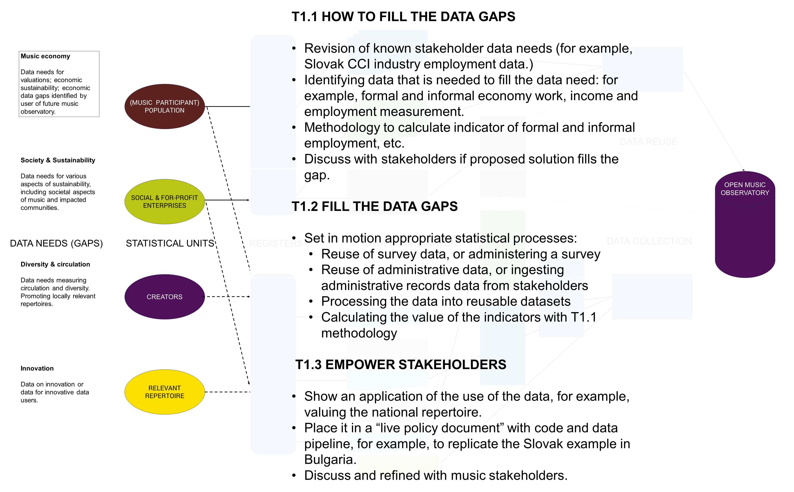

| Pillar 1 - Music Economy | |||
|---|---|---|---|
| Topic | Description | ||
| pillar | problem | availability | feasibility |
| Pillar 1 | Value of music sector | One-off | EY study on the cultural and creative industries (2015) |
| Pillar 1 | Value of music sector | One-off or one recast | CEEMID studies on national music economies |
| Pillar 1 | Employment | One-off | EY study on the cultural and creative industries (2015) |
| Pillar 1 | Employment | One-off or one recast | CEEMID national music industry reports |
| Pillar 1 | Employment | Annual | Eurostat, lacking granularity |
| Pillar 1 | Employment | Data gap | Absence of granularity on the employment of the various sub-sectors, in particular in defining the roles of the various sub-sectors and the importance of the not-for-profit sector in terms of employment. |
| Pillar 1 | Employment | Data gap | HU, SK pilot successful to add granularity. |
| Pillar 1 | Value of music sector | Data gap | No EU-level assessment since 2015 |
| Pillar 1 | Strucutre of the market | Data gap | Absence of pan-European data detailing the number of companies, employees, revenues for the sector and the subsectors. |
| Pillar 1 | The impact of the not-forprofit sector on the overall economy of the music sector | Data gap | No data available on the specific impact of the not-for-profit sector, especially in the live music sub-sector |
| Pillar 1 | Recorded music | Subject to partnership with IFPI | IFPI |
| Pillar 1 | Authors and publisher’s stream | CISAC partnership | CISAC |
| Pillar 1 | Authors and publisher’s stream | GESAC | GESAC |
| Pillar 1 | Recorded music stream - performer rights | Data gap | No aggregated data on neighbouring rights collections Partner with AEPO-ARTIS and SCAP. |
| Pillar 1 | Music publishing | Data gap | No aggregated data on the music European music publishing business |
| Pillar 1 | Synchronisation rights | Data gap | IFPI data available on the recorded music side but not on the publishing side. |
| Pillar 1 | Independent music companies | Data gap | No aggregated data on the independent music sector (value, number of companies, employees, etc.) |
| Pillar 1 | Live music | Data gap | Some data is compiled by Live DMA, ETEP or Yourope, but there is no aggregated data on the pan-European live music sector listing the value of the market, the number and size of venues and shows, number of festivals, share of European artists, among other data points. |
| Pillar 1 | Exports | Data gap | No pan-European data on the export flows between EU countries and outside the EU. |
| Pillar 1 | Exports | Data gap | Embedded cultural tourism export. |
| Pillar 1 | Music retail | Data gap | Granular data on some countries via retail associations (UK, France, Germany) but no pan-European aggregated data. |
| Pillar 1 | Financing of the music sector | Data gap | No aggregated data on how the sector is financed (from investment fund to bank loans and subsidies). |
| Pillar 1 | Live music regulation | Data gap | No aggregated information available on the various legal and tax systems within the EU applied to the live music sector. |
| Pillar 1 | Copyright regulations and evolution of copyright regimes | Data gap | Although many copyright laws applicable in Europe originate from the Commission, there are few instruments available to monitor the state of copyright regulation across the EU |
Abstract
In the last decade, the evidence-based policy movement gained significant traction in Europe as well as globally. Its focus has been to increase the rigour of the evidence generated, to improve the credibility and understandability of evidence created for policy purposes. As evidence-based policies often rely on scientific evidence, the evidence-based policy movement went hand in hand with the efforts to increase the transparency and reproducibility of scientific research (See: (Munafò et al. 2017) and in an EU context (Wilson 2015; European Commission, Directorate-General for Research & Innovation et al. 2020; European Commission, Directorate-General for Research & Innovation 2020).)
Our Report on the European Music Economy, and its supporting document, Economy of music in Europe: Novel data collection methods and indicators will follow the Open Policy Analysis Guidelines and the best practices of the European Union’s Knowledge For Policy and the European Open Science Cloud portal.
The aim of this document is to share an open report that includes clear accounts of all methodological procedures, data, and assumptions. Best practice: All project components are organized in a selfcontained folder using a Standard File Structure (SFS), and a readme file is included (in this case, here). We place all files with SFS on the European open science repository Zenodo on zenodo.org/communities/music_observatory/.
This is very much a work in progress; most of the expected part of T1.1 requires research from EUBA and SSSA. This document currently aims to help the editing of a minimal version of the D1.1 and to provide clear connection points for T1.2 and T1.3.
Warning
A warning note shows that something is critically missing to deliver D1.1
Tip
A tip note shows that something needs to be discussed to prepare our workshop(s) in September or organise the work in subsequent tasks like T1.2 and T1.3.
In terms of research aims, this document contributes to T1.2 and T5.1 with defining the statistical framework and statistical processes that need to be employed to fill the data gaps (the main objective of the Open Music Europe grant.) This is only briefly a topic for D1.1, however, it is very difficult to deliver D1.1 and D1.2 without the researchers involved in those tasks understanding the statistical framework and processes.
Overview
Note
There are three differents documents:
To quote the task description:
The methods and indicators will be presented in D1.1. Because the same indicator development methodology is used in
WP1,WP2,WP3andWP4, this is part of a separate document which defines the entire data-to-policy pipeline, i.e., the main objective of the grant. Data Pillars in the Open Music Observatory (html, pdf, docx, epub). If we need more details in D1.1 we can bring over from that document.Indicators that bring transparency to music streaming and zero-marginal-price (free) uses of music are developed, as well as indicators about the economic contributions of music to the national economy. This is the subject of this main document, and can be found here in html, pdf, docx, epub formats.
A market comparator model for valuing public performance and free uses, such as representative music streams (based on CEEMID ‘full market model’ and a DCF model) is developed. This is a separate document: A Market Comparator Model for Valuing the Use of Music. We need to summarise this document in D1.1, but to me it is rather different.
High-level overview of what should go into D1.1
D1.1 The Music Economy Data Pillar The main aim of T1.1 (D1.1) and T2.1 (D2.1) and T3.1 (D3.1) is not how the data should be collected, but what information is needed to fill the industry’s “data gaps” and how that information can be assembled from data.
Note
For clarity, the background material on how data should be collected is numbered with Roman numerals, and the parts that are intended to go into D1.1 are numbered with arabic numbers.
Because the Open Music Europe General Assembly endorsed the idea to open up these task for a longer period of time, currently we do not aim to provide a full data gap analysis. Instead, we do the following:
- We provide an overview of the pre-existing EU data gap analysis (Feasibility study)
- And a pre-existing Slovak data gap analysis (based on EUBA prior work, the creation of the Slovak CCI strategy, and SOZA’s involvement int it).
- A methodology to refine this data gap analysis to the more current needs of the European and Slovak, Bulgarian music industry.
- A general methodology to fill the data gaps with indicators.
This is feasible on this generalisation level by 31 July, however, this is a very early and intermediary output; it is more of a summary of pre-existing research.
Note
T1.1. Methods and indicators (lead: SSSA; contributors: UVA, EUBA, REPREX, SOZA, ALOADED, ECSA, MUSICAUTOR). [Start: M1, End: M7] Indicators that capture the economic value of music in Europe are developed.
- Indicators developed in the Central European Music Industry Report are refined (which made use of 300 million individual royalty statements).
- Indicators that bring transparency to music streaming and zero-marginal-price (free) uses of music are developed, as well as indicators about the economic contributions of music to the national economy. A market comparator model for valuing public performance and free uses, such as representative music streams (based on CEEMID ‘full market model’ and a DCF model) is developed. A Market Comparator Model for Valuing the Use of Music
- Design of an enterprise surveying method that is appropriate for MSMEs and freelancers, who are excluded from current (official) data collection. The method will entail simple questions, simplified financial statements, and special sampling and weighting strategies designed to mitigate bias.
- Exploration of individual dynamics and problems in music data improvement and harmonisation, and potential stumbling blocks which may thwart data improvement projects, via desk research and stakeholder interviews; this will include a legal-comparative study and an economic analysis.
Methodological approaches, data collection instruments, and indicators are discussed in a methodology workshop (M1).
Further sectors may be added on the basis of the feedback collected through interviews with policymakers (M2-6) and stakeholders’ and expert workshops (M7). The market comparator model will be designed in M1-6, tested in M17-18, and released in M27. The methods and indicators will be presented in D1.1.
Connecting tasks
From policy data gap analysis to data coordination: defining precise data needs (T1.1-T1.2)

To successfully hand over D1.1 and start working on T1.2 and T1.3 we need to have a clear view of what the stakholders need, and from what data sources, what type of indicators can fill those needs. For example, we need to identify that in a survey process, what must be asked from the general public as end-users, or music professionals and entrepreneurs. To keep us harmonised with pre-existing statistical and open science or open government sources, T1.1 must identify harmonised survey questionnaire items, and pre-existing variables made from these survey items. (For example, in LFS)
Now the first document turns into a more practical explanation of the data-to-policy pipeline, which can be broken down to subtaks. Because most of these are not T1.1/T1.2/T1.3 subtask, they should be understood to the point that T1.1/D1.1 can successfully delivered.

The statistical processes that we define are reuse or data collection with surveys and from administrative records; i.e. music industry sources originally not designed for statistical purposes. For researchers working on T1.1/T2.1/T3.1 and T1.3/T2.3, T3.3, the statistical processes are collecting the data and processing them to microdata datasets or indicators for further analysis. They are called a statistical process because they describe if pre-existing surveys or records can be used to find the data, or new (and what type of) survey must be administered. The statistical processes will be defined in T1.2, T2.2, T3.2 based on the business and policy needs identified in D1.1, D2.1 and D3.1.
Note
T1.2. Data collection, synthesis, and reporting (lead: UVA; contributors:, TURKU, UVA, SSSA, REPREX). [Start: M7, End: M18] Collection and reporting of the data points identified in T1.1.
D1.1 must define the policy questions and their data needs in a way that the data coordination and collection can be carried out: T1.2/T2.2/T3.2 knows that type of data must be collected. Beware, the T1.1-T1.3 gets data from all T1.2/T2.2/T3.2.
- Integration of confidential, but standardised industry data collected by GESAC and CISAC members: at least for Bulgaria, Hungary, and Slovakia, but potentially for other countries.
- Collect streaming data utilising the open-source software ecosystem developed in WP4.
- MSME survey as developed in T1.1 is carried out in partnership with representative organisations in Bulgaria, Hungary, and Slovakia using the open collaboration method: all methods and instruments are fully open, and all data will be harmonised. Localisation assistance may be provided in partner countries (e.g., Germany, Netherlands, Lithuania, Italy).
- Utilisation of primary data on music consumption collected during the cultural access and participation (CAP) surveys in T3.2. All data is reported on a continual basis within D5.1.
The interface between D1.1 (D2.1 and D3.1) is the statistical register. The statistical register tells REPREX and UTU from what enterprises and which people we need to collect/process/ingest data. T1.1/T2.1/T3.1 must define a statistical register that our music industry pilot partners, i.e., SOZA and MusicAutor can implement from their own registries. The statistical register is a critical interface between the gap analysis and the actual data collection. General statistical processes of the Statistical Office of the Slovak Republic collect data from all Slovak residents or all Slovak enterprises (meeting a certain size threshold.) To make these statistical processes focus on collecting data relevant for the music industry, we must say which residents are ‘music professional’, or which enterprises are ‘music enterprises’ and we must direct the statistical data collection processes towards them.
The CEEMID background know-how has elements of how to turn the SOZA/Artisjus registries into music industry registers for both WP1 and WP2. To understand the concept, the WP2 register is an easier-to-understand example, but WP1 will do something similar. In WP2 we want to create diversity and circulation indicators, for example, what is the market share of Slovak music in Slovak radio or streaming charts? To machine-process data, we need a register, which selects our algorithm from any radio or streaming playlist the Slovak musical works and music recordings. The Feasibility demonstrated this with the Slovak Demo Music Database; now SOZA, with the help of Hudobne centrum and Hudobny Fond is building the Slovak Comprehensive Music Database. The basis of this database is the musical work registry of SOZA. SOZA had been trying to add to this registry a sound recording register, too; we will speed up this process in WP2.
In WP1 we will need a similar register to identify enterprises and freelancers who contribute to the value added, employment, or other statistical indicator of the Slovak music industry. The basis of this will be the SOZA membership registry, which is by virtue of the copyright directive and its national transposition, public in all EU countries. CEEMID and MusicAIRE SurveyHarmonies demonstrated how to turn this into a quasi statistical register for surveying; in Open Music Europe we try to take this a step further in order to coordinate and harmonise data with the Slovak National Business Register held by the Statistical Office of the Slovak Republic.
From data collection to empowering the users with use cases (T1.1-T1.2-T1.3)
I. Defining the Data-to-policy Pipeline is meant to give a more precise definition of the data-to-policy term in our grant agreement.
I.1 Data coordination and ingestion
I.2 From data to indicators
I.3 From indicators to policies
I.4 Interactive communication of indicators and Open Policy Analysis
People not familiar with the indicator design and production concept should focus on that part. When our grant agreement is talking about “filling the data gaps”, it is talking about produdcing business or public policy indicators, and if possible, scientifically validate them, for the target groups of Open Music Europe. T1.1, T2.1 and T3.1 should clarify what are the data needs of the various music target groups, and how should it be filled.
Note
T1.3. Policy context, pilot study, and impact pathways (lead: REPREX; contributors: UVA, EUBA, SOZA, ARTISJUS, MUSICAUTOR). [Start: M1, End: M30]
D1.1 must define from a scientific/evidence point of you the models and their data needs, so that the case studies can be built in T1.3.

This task will comprise three phases:
Open policy analysis of the musical economy in Europe. The policy analysis will show that many “data gaps” on the economy of music in Europe are illusory, and data is often not directly usable because of conflicts of interests, or data interoperability/processing problems.
Implementation of a pilot study in Bulgaria and Hungary. The pilot study focuses on transferring data collection and modelling methods pioneered in Slovakia to more accurately capture total music value. The capacity of stakeholders to leverage better data collection and modelling in order to improve artist revenues is demonstrated.
Co-creation of policy guidelines and recommendations for scaling and transferring the pilot on an EU27+ level. Using the Open Policy Analysis guidelines, we demonstrate how to fill partially or fully the data gaps on the economy of music identified in the Feasibility Study of the European Music Industry. The policy analysis, pilot study design and results, and transfer potential is presented in D1.2.
Then we can turn to the second, detachable part of the document.
To start the T1.2 task, we must create the first version of the data needs assessment based on pre-existing documents and then curate and specify the data sources.
- What are the data needs of the stakeholders? What kind of indicators would satisfy them? See WP1 Data needs assesment.
- Can we find reusable data for the creation of these indicators? See Public Sector Information Reuse.
- If we have to collect the data ourselves, how must we ensure with an appropriate statistical registry that the data will be compatible with pre-existing data? See WP1 Data coordination.
- We must set up harmonisation protocols, for example, to identify existing natural persons and enterprise surveys that contain the relevant data; find corporate or national accounts that we can use. See WP1 Linking data and microdata.
- We must give instructions on how to ingest or collect the data and how to process it to the correct indicator dataset.
- We should create indicator prototypes before we scale up data collection in T1.2. (The Data collection: Surveys leads towards the
T1.2task.)

WP1 Methodology
Note
General text
Music economy definition
Warning
EUBA should provide an overview of what are the cultural & creative sectors and industries (CCSI); how this definition varies and how it is used in the Slovak CCI strategy context and in Music Moves Europe
The Statistical Classification of Economic Activities in the European Community, commonly referred to as NACE, is the industry standard classification system used in the European Union; it is a slightly adopted classification of the more general UN standard. The direct reason why most cultural and creative industries require a special mapping is that they are not part of the NACE classifiction. The indirect reason is that many creative activities overlap among creative industries, for example, sound recording can be a part of the music and film/television/video industry, too.
Because NACE does not have a music industry group or class, we find the employment or economic performance of the sector in various parts of NACE. In case we have at least four-digit coding of NACE, we find in a homogeneous form a section. If we can divide the J section, and division 59 into J591 film and television production and post-production activities and J592: Sound recording and music publishing activities. This is however a very small part of the music professionals; and many statistical products do not go down to 3- or 4-digit precision because of the high decentralisation of the industry, and that much of the industry is part of the informal economy.
Regarding employment, the International Standard Classification of Occupations (ISCO) is an International Labour Organization (ILO) classification structure for organizing information on labour and jobs. It is part of the international family of economic and social classifications of the United Nations. Filtering by ISCO codes may help, however, there is only one “clean” ISCO code that contains music only workers, 2652. These artistic roles (musicians, singers and composers) are of primary interest, but they cover only a minority of the music industry, as the number of technical and managerial support personnel is likely to exceed the size of the artist population.
The problematic NACE division is R90 which has only one group, R90.0, which is further divided into four classes: R90.0.1—Performing arts; R90.0.2—Support activities to performing arts; R90.0.3—Artistic creation; R90.0.4—Operation of arts facilities. Each of them can contain music activities, however, they are mixed with theatre, movie, dance activities.

For the mapping of the music industry, we use the standard “three income stream model” that is widely accepted in the United States as well as in the European Union (Hull et al. 2011) or in Europe (Andra Leurdijk et al. 2013; Adnra Leurdijk and Ottilie 2012). We have experience in using this value chain for mapping the national music market’s sales, use and price data in Hungary, Slovakia, Croatia.
Indicator design and testing
The use of indicators is widespread in the economics, business, social aspects, or public policies of music and the broader cultural and creative industries agenda. A statistical indicator summarises a key issue or phenomenon derived from a series of observed facts; it is a generalisation of the information in the data. The knowledge we gain from indicators is used to uncover social, environmental or economic phenomena and establish connections between them. It also provides a basis for influencing and controlling such phenomena on a business level (for example, key performance indicators) or the level of public policy (for example, ex ante and ex post evaluation indicators.)
A statistical indicator is a summary measure related to a key issue or phenomenon and derived from a series of observed facts. [Kotzeva et al. (2017), pp. 7]1
In the business management, the use of indicators is discussed in the topic of performance management, which goes back to the the early 19th century. The use of standardised financial indicators dates to the 1910s (Du Pont analysis), and it became widespread in the 1990s with the emergence of Enterprise Resource Planning (ERP) systems.
We have not found a definition for indicators in accounting law or standards on the EU level. In the UK, the Companies Act of 2006 (as originally enacted) defined key performance indicators (KPIs) in the context of the management discussion of financial reports.
“Key performance indicators” means factors by reference to which the development, performance or position of the business of the company can be measured effectively. — Companies Act of 2006 Chapter 5 — Directors’ report; Part 15 — Accounts and reports; 417 (6)
Informal economy
Because the Slovak music economy overlaps with the informal economy and because many individuals add value to the Slovak music sector’s activities without formal employment in the sector, we suggest following the methodological guidelines on measuring informal employment and value creation regarding the sector.
As we have realised during the creation of the Hungarian, Slovak and Croatian music industry reports, these national ecosystems mainly form an informal music economy. Bands, orchestras and ensembles operate like small enterprises with “generating employment and incomes for the persons concerned” and without the aim of engaging in company growth or creation of jobs. The same can be said of most music labels: they are not investible, have no formal economic structure, HR policies, etc.
“The informal sector may be broadly characterized as consisting of units engaged in the production of goods or services with the primary objective of generating employment and incomes for the persons concerned. These units typically operate at a low level of organization, with little or no division between labour and capital as factors of production and on a small scale” (International Labour Organization (ILO) 1993). In addition, they share the characteristics of household enterprises. The resolution defines the concept of the informal economy as “all economic activities by workers and economic units that are—in law or in practice—not covered or insufficiently covered by formal arrangements”.
In the 1990s, the research on the informal economy, particularly in an Eastern European context, meant research on a household economy that was neither part of the former planned economy nor the new market economy and evaded the data collection of the tax authorities. The modern definition of the informal economy used by the OECD, ILO or the IMF recognises the importance of the informal economy and does not focus on anomalies but regards the informal economy as a core component of economies at every level of development. Informal employment exists in countries at all levels of socio‐economic development. More than 60 per cent of the world´s employed population earn their livelihood in informal employment. While the practice is generally associated with developing countries, developed countries like the EU member states have a significant informal sector (International Labour Organization (ILO) 2018).
The economic units that fit the more modern ILO definitions centred around “generating employment and incomes for the persons concerned” operate on a low level of organisation, and small scale is fitting the freelancers and most microenterprises. In the European Union, Slovakia is no exception, these economic units are subject to simplified financial reporting and tax administration requirements. Economic sectors that are dominated by these informal enterprises, such as music, are invisible to the general national and European statistical systems for two reasons: because of their simplified tax administration, the main statistical process, i.e. processing administrative data from tax authorities, cannot be performed for this segment. And in the omnipresent economic policy and political pressure to cut the administrative burdens of small enterprises, this segment is also exempted from regular statistical data collection. In Slovakia, only enterprises with at least 20 employees are subject to census-like, annual data surveys of the SOSR; smaller organisations, including members of the informal economy, are subject to sampled surveys. Slovakia, following the methodological recommendations of the ILO, IMF and OECD, introduced mixed surveying in 2010 to cover the informal economy. In practice, the data collection for structural business data is carried out in random samples of both enterprise and household surveys. While this is a technically good solution, as the relevant methodological guidelines stress, because of the small sample sizes, indicators cannot be created for a narrow sector like the music industry.
Mixed survey harmonisation
The methodological innovation of the CEEMID project was to include personal surveys to complement the enterprise business indicators. As a statistical process, CEEMID represented the best method available in the 2010s, but due to the novelty of mixed surveys and the low prioritisation of the creative industries in national statistical programs, CEEMID could not connect systematically to the official national statistical frameworks. In Open Music Europe, we aim to improve this background methodology to integrate a voluntary, industry-specific statistical framework in the music observatory with the Slovak and further national statistical frameworks.
Because the Slovak music economy overlaps with the informal economy, and because many individuals add value to the Slovak music sector’s activities without a formal employment in the sector, we suggest following the methodological guidelines on measuring informal employment and value creation with regards to the sector; as a data collection process, we suggest the use of mixed surveys. Mixed surveys are personal or household surveys regarding their collection mode but target information that is normally collected by enterprise surveys.
The OECD Manual on Measuring the Non Observed Economy endorses the a combination of LFS surveys with in-depth more specific surveys, such as the Digital Music Observatory/CEEMID music professional survey that we want to further develop: “Monitoring the number and characteristics of the persons in the informal sector and the conditions of their employment and work can be achieved by periodically including a few additional questions pertaining to the informal sector definition in an existing labour force or similar household survey […] Labour force or similar household surveys are often conducted at a higher frequency than specialised, in-depth informal sector surveys. Thus, the data obtained from the former concerning the evolution of labour inputs in the informal sector can be used to extrapolate data from the latter …” (International Monetary Fund (IMF) 2002, 170).
Similarly, the manual on the same topic of the International Labour Organization suggest to take the LFS as a starting point: “There are many advantages to including the measurement of both informal employment and employment in the informal sector in a labour force survey or a household survey that includes the labour force as a topic These include the relative ease with which the topics can be added to an existing survey, cost-effectiveness, conceptual coherence with other labour force statistics, and the analytical possibilities offered by the collected information.” (International Labour Organization (ILO) 2013)
Methodologically, this means an ex ante and ex post survey harmonisation task (in T1.2 and T1.3) between the Slovak LFS survey and the Digital Music Observatory Music Professionals survey.
As an ex ante harmonisation task, the best solution would be the inclusion of simple, conditional, anchoring questions into the Slovak LFS, which may be necessary anyways for the monitoring of the Slovak CCI strategy. It would be sufficient to ask conditional, qualifying questions from respondents with activities or occupations that make it likely that they are part of the music or another creative sector. In the DMO Music Professionals Survey, the questionnaire must be updated with questions from the Slovak LFS.
The ex post harmonisation means the creation of joint datasets with the data anchors of the extra qualifying questions and the demographic questions, which allow the data joining or fusion of microdata from the Slovak LFS and the DMO Music Professionals survey.
Digital Music Observatory/CEEMID Music Professional surveys
Most of the data gaps defined by the EMO Feasibility Study cannot be filled with public data, and it is unlikely that the cost/benefit considerations of surveying would allow a census-like data collection beyond the data that these enterprises already made public. Therefore, the most important function of the SKMBR in Slovakia is the preparation of the surveys that target only a sample of the relevant music industry preparation.
In the past years, CEEMID used an open framework connected to collective management membership registers, considering that some music industry players were not associated with SOZA, HDS, and Artisjus in Slovakia, Croatia and Hungary. Our experience in the preparation of surveying the Hungarian, Slovak, and Croatian music industries first, then moving on to many other countries, was that for the music industry stakeholders, it is always a cost/benefit decision itself if they join a collective rights management organisation, even if the choice of not joining (and registering an intellectual property) results in revenues that will never be paid to the music creator or the business entity.
It is important to include as wide a range of stakeholders in the survey creation process as possible.
The way CEEMID handled these problems is that it created a meta-registry: it produced anonymous surveys that allowed data entry by music professionals who were not associated with the collective rights management organisations but who were invited by trusted members or associations. For example, in Hungary, the national DJ association and Zenészbázis, a civil society organisation that was very critical towards the Hungarian collective management organisations, agreed to distribute our surveys. We then included data points in the survey that could be statistically (but not individually) connected with Artisjus’s and SOZA’s data in-house.
Lessons from the Central European Music Industry Report
When the CEEMID project created the Central European Music Industry Report (Antal 2020), we failed to create a proper collection framework for Moldva because the country had weak institutions. In Armenia, due to the general mistrust of ARMAUTHOR, we created a private registry to collect data. This is understandable: creators base their membership and representation decisions on comparing the likely annual income and the cost of administration, and they often consider subjective criteria such as the justice of royalty distribution. When CEEMID started to work in Slovakia, the Slovak collective management organisations could distribute far less income than the Hungarian organisations, and we found a higher segment of the business demography that was not associated with these organisations. In Hungary and Slovakia, we realised that hip-hop creators are often missing from the membership list because they produce music that has lyrics which is too explicit for radio play or to be used as background music. As public performance revenues are the main income sources in the Central and Eastern European region, it is logical that creators who will not have such revenue do not register. In Open Music Europe, we see that Musicautor faces a more severe problem than SOZA did due to low revenue.
The Lessons from the Central European Music Industry Report above show that already the population definition requires an intimate knowledge of the domain. The actual data needs assessment is also based on the domain knowledge of the collective music organisations. For example, we do not want to collect data that is already available or can be created in a more comprehensive, census-like manner: connecting membership data with public company registry data is almost certainly cheaper and more reliable than surveying. When we rely on questionnaires, we must assess what can be asked in a personal survey and an enterprise survey. The questions must be set to harmonise with statistical business surveys for comparability, on the one hand, and the target population understands them. In other words, we must frame the questions so that a music professional will likely give the information the statisticians want. This is challenging because, in the music industry, most business is led by creative people who only rarely have any formal or informal training in business administration and use business information in a very informal way.
For example, CEEMID pioneered the semi-open anonymous music professional survey format. To ensure that the data collected from these surveys remains representative, we included questions about royalties collected from the participating collective management organisations like SOZA in the Slovak Republic or Artisjus in Hungary. We collected survey data from a quasi-open population until we found a 95 or 99% correlation between the self-reported income of unknown music professionals from SOZA and Artisjus and the actual annual distribution of the organisations (which was provided to the researchers in an anonymous vector of numbers to establish the true distribution of the surveyed quantity.) This is a simple form of data fusion or statistical data linking (See, for example, the Slovak Music Industry Report—Správa o slovenskom hudobnom priemysle (Antal 2019).).
Enterprise survey harmonisation
Open Music Europe offered enterprise surveying. We believe that this requires a voluntary adoption of the Slovak SBS exhaustive survey of large enterprises with questionnaire Roc 1-01 and small enterprise survey Roc 2-01 with the creation of the Slovak Music Business Register.
- Clarify if there is any company in Slovakia in the music industry that may fall under the scope of
Roc 1-01. In this size category, the survey is annual and census-like, mandatory, so we would ask a voluntary copy of the questionnaire that anyways must be sent to the SOSR.
- Clarify if there is any company in Slovakia in the music industry that may fall under the scope of
- Identify companies that may fall under the scope of
Roc 2-01and ask them to share their questionnaires (which they must send to SOSR anyways) with us, or if they were not asked, to voluntarily fill this out for us. In this size level, the surveying is sample based, and it is unlikely that any music business falls more than once in their business life into the sample.
- Identify companies that may fall under the scope of
For example, SOZA could fall into the category that may, by chance, receive a Roc 2-01, perhaps once or twice in a century; however, it could initiate a voluntary data collection of similar-sized music organisations to fill out the questionnaire every year or every second year.
Personal survey harmonisation
CEEMID used extensive personal survey harmonisation to measure music access and participation; this is critical information about zero-price music, such as radio, television, ad-supported streaming, and illegal and home copying. We want to follow the CEEMID practice as the best practice, which followed the best surveying practice identified by the ESSNet-Culture working group of the European Statistical System in the general cultural access and participation (CAP) framework. The CEEMID questionnaires adopted the CAP framework for the music and audiovisual cultural domain.
CEEMID has used questionnaire items that were standardised with the methodology created by the ESSNet-Culture working group of Eurostat and participating EU national statistical authorities (Haan and Adolfsen 2008; Bína, Vladimir et al. 2012; Haan and Broek 2012), mainly based on pre-existing best practices developed in the Netherlands. The ex ante harmonisation of questionnaire items (the same question is asked in the same format and with the same national language translations) are one of the prerequisites of joining data from surveys taken at different times, in different countries, or by different organisations. This practice has been developed by CEEMID since 2014 and further improved by the SurveyHarmonies project of SINUS and REPREX with the help of MusicAutor, SOZA, and Artisjus in 2023. It was also the basis of the development of [retroharmonize] R language software package hosted by the rOpenGov community, organised by the University of Turku Data Science group and actively developed by REPREX. Open Music Europe will continue to develop these methodologies and tools for creating a music economy, diversity surveys and collecting data on the societal and sustainability aspects of music.
Unlike the earlier mentioned LFS, the CAP surveys are not part of a permanent, standardised European statistical data collection program. Instead, a CAP survey module is periodically placed on the questionnaires of various harmonised European personal surveys, such as Eurobarometer, EU-SILC or AES.
CEEMID and the MusicAIRE SurveyHarmonies project have ex ante harmonised the Digital Music Observatory CAP Survey to a great extent with Eurobarometer and to a smaller extent with other personal surveys. However, ex post data harmonisation was not carried out with other European survey metadata than Eurobarometer. In Open Music Europe, we should harmonise with AES, EU-SILC, and improve the personal questionnaire.
WP1 Data needs assessment
European Policy Context
Warning
REPREX & SOZA to provide a CCI-based context of past efforts.
In late 2015, the European Commission started a dialogue with representatives from the music sector2 in Europe with the aim to identify key challenges and possible ways to tackle them, including EU support. “Music Moves Europe” has become the framework for these discussions and, more broadly, for EU initiatives and actions to promote the diversity and competitiveness of Europe’s music sector in terms of policy and funding. As part of the 2018 Preparatory Action “Music Moves Europe: Boosting European music diversity and talent,” the EU commissioned the creation of the “The feasibility study for the establishment of a European Music Observatory” (Commission et al. 2020) (in short: EMO Feasibility Study.) The current call, Towards a competitive, fair and sustainable European music ecosystem explicitly refers to the relevance of the Music Moves Europe policy context.
The Open Music Europe project plan and grant agreement foresees the development of an open science and open data service which complements the existing statistical service of Eurostat. In partnership with the key music industry and policy partners, we will fill as much as possible from the approximately 41 data gaps within the policy context of Music Moves Europe, as identified by the Feasibility Study for a European Music Observatory. We will develop key performance indicators for music businesses and policy indicators to “better detect the performance of the European music sector and its contribution to economic and social development, as well as to sustainability.”
In Europe, public policies on music are mainly the competencies of member states, who often develop policies for all creative sectors because of their similarities. Furthermore, because of the territorial nature of copyright law, the publishing and recorded side of the industry is also organised according to national markets. Both public and business policy requires most indicators at least on the national level. Therefore, the data gaps must be filled with national indicators.
After the kick-off meeting of the project, Sinus as the coordinator of the Open Music Europe project, and EUBA, SOZA and REPREX signed a Memorandum of Understanding with the Slovak Ministry of Culture and the Institute for Cultural Policy (Open Music Europe 2023b). This MoU ensures that we apply the Eurostat public policy indicator harmonisation guidelines in at least one member state, i.e., Slovakia.
The starting point of our needs assessment is a critical revision of the Feasibility study for the establishment of a European Music Observatory (short: EMO Feasibility Study) and the Stratégia kultúry a kreatívneho priemyslu Slovenskej republiky 2030 (Strategy of the cultural and creative industries of the Slovak Republic 2030, short: Slovak CCI strategy.)
At the proposal stage, we mad the following pre-assessment of the data availability for WP1. In the case of Pillar 1 – Music & Economy, we are usually able to locate the source of the data, and we have some experience in processing the data and bringing it to light. We have mapped many perceived data gaps to the various data harmonization projects of GESAC and CISAC, and we will seek cooperation with these organizations and their members to find a secure and voluntary way to retrieve the data. The only data gap that we do not intent do address is the “impact of the non-profit sector”.
National policy contexts
Warning
EUBA to provide a short description of national cultural policies, and the fact that the cultural policy is mainly on national level.
This is a very good document, just published last Friday that can be a good way of filling our MoU with content: (Katsinis et al. 2023) and this should be considered, too: (European Commission 2022).
Pilot country: Slovakia
Warning
EUBA to introduce the Slovak CCI strategies in the context of the European CCI policy and Music Moves Europe. What is special about Slovakia? What is similar? What is the history of CCI/music policies in Slovakia.
Value-added
Share of music in the value added of the culture and creative industries
Warning
The Slovak CCI Strategy identifies a value added KPI and cites the Slovak CCI satellite accounts as data sources; EUBA should discuss what is the KPI about, what are the initial values, introduce the CCI satellite account, and provide us ideas on how to calculate this indicator for the music industry itself.
Employment
Employment breakup: for-profit and non-profit
The Feasibility study stresses out that there is an „an absence of granularity on the employment of the various sub-sectors, in particular in defining the roles of the various sub-sectors and the importance of the not-for-profit sector in terms of employment.”
Note
Providing a solution for this gap in Slovakia would be interesting, because this is the type of data that is can be resolved differently in countries that rely more on surveys and differently in countries that rely more on administrative records data.
From administrative records, this could be computed if the Slovak Republic has a national business registry and a national non-profit registry it collects any income payouts from them.
Another solution could be to ask in a personal survey (perhaps harmonised with LFS) about the type of employer the music professional has.
Number of male and female employees
Warning
The stated source is the satellite account of the CCI; which is only a secondary source. Furthermore, the music industry does not have a a satellite account.
We need to review the current (past) values of this KPI and its calculation, and also the concepts used in the indicator: what employment and sex concepts are used? How are different occupations like sound engineer, tour manager, or music performer are mapped into this indicator per industry? What is the policy use/debate that needed to make this KPI strategic?
This could be an interesting point of discussion to refine this indicator and provide it for the music industry, too.
This indicator is particularly interesting, because it can relate to our WP3 task as a primary information source to calculate the indicators in ESRS S1.
Number of self-employed persons
Warning
Number of self-employed persons in the culture and creative industries; Ministry of Culture Statistical Office of the Slovak Republic KPI 3c (strategy); Satellite account CCI
The same questions apply: what employment concept is used for self-employed persons. Because satellite accounts use an full-time equivalent (FTE) concept, we need a good reconciliation with the previous indicators.
The Slovak SBS’s brief English summary on Eurostat mentions that SOSR has been creating mixed surveys to include freelancers, this should be briefly explained.
At last, we need questionnaire items, and clear instructions from whom to ask them to get to this figures in our own data collection.
Average income in culture and creative industries (music industry)
Warning
Average income in culture and creative industries - number of industries lagging behind the national economy average; Ministry of Culture Statistical Office of the Slovak Republic KPI 3d (strategy); Securing the dignified working environment in CCI.
It is unclear what income concept is measured here (corporate income? government tax income? personal income?)
In the Slovak Music Industry report we had shown that the majority of the muisc professionals are working among atypical working conditions. We should clarify what income concept the indicator uses; review its current and past values and how they were calculated. An interesting point to start the clarifications: provide a case study on how the payouts of SOZA (which are unambiguously represent income toward music industry professionals in artistic roles are taken into consideration during the computation of this indicator.) Trace a Jane Doe’s payout from SOZA (what are the administrative trails) into the indicator.
Average wages of professional men and women
Warning
Average wages of professional men and women in the cultural and creative industries as a proportion of the average wage of university-educated men and women in the national economy; Ministry of Culture KPI 3e (strategy); Securing the dignified working environment in CCI We need to clarify if this indicator can be computed and makes sense for the music industry. A starting point could be establishing the percentage of music industry workers who earn a wage. What wage concept is used in this indicator? And what music industry concept is used?
This indicator is interesting if the correct “wage” concept is applied, because it is the basis of the mandatory disclosures of ESRS S1 “the male-female pay gap, defined as the difference between average gross hourly earnings of male paid employees and of female paid employees expressed as a percentage of average gross hourly earnings of male paid employees.”
Minimum wage earners
Warning
Percentage of people working in the music industry with income over the minimum salary in the economy; KULT surveys, LFS
Music production
Number of Live performances in abroad
Warning
KULT surveys
WP 1 Data coordination
A statistical register is a continuously or regularly updated set of objects for a given population. It contains information on identification and accessibility of population units as well as other attributes which support the surveying process of the population. The Statistical register should contain the current and historical statuses of the population and the causes, effects and sources of alterations in the population. Statistical register are stored in a structured database.
Data Infrastructure: The Music Industry Business Register Concept
Statistical business registers (BR) are repositories of legal and statistical units to be used for producing business and macroeconomic statistics. They include information on the active population of:
- Enterprises carrying out economic activities which contribute to the gross domestic product (GDP);
- Legal units of which those enterprises consist of;
- Local units;
- Kind of activity units;
- Enterprise groups, incl. all-resident and multinational enterprise groups.
In the current statistical infrastructure, each EU member state has set up a national statistical business register (NSBR) within their national statistical office on the basis of the European Regulation 2019/2152 (European Parliament and the Council 2019), which updated earlier regulations in this field going back to 1993. These NSBRs connect to the government’s tax authorities, company registration institutions like chambers of commerce or government company houses, and courts. They have an essential role in creating business statistics.
NSBRs are not of identical quality across the EU; the motivation behind Regulation 2019/2152 was correcting some differences among member states. Furthermore, a long-known problem of the NSBRs is that they do not cover well very small enterprises (Eurostat 2021, 43–44.), and certain industries are dominated by very small enterprises. The cultural and creative industries, and the music industry in particular, fall under these problematic areas.
The earlier statistical guidelines suggested various forms of improvements that required either special projects between national statistical authorities and representative music industry bodies or were mandated by national authorities themselves. Without these special actions, it is not possible to create similar indicators for the music industry that exists, for example, for car manufacturing, paper production or electricity distribution.
In Open Music Europe, we have no legal mandate to carry out such experiments, but based on the Memorandum of Understanding on utilizing the Open Policy Analysis results of the OpenMusE Research and Innovation Consortium in the context of Slovak cultural and creative industries and sectors’ public policies (Open Music Europe 2023b), we will try to persuade the Slovak national authorities to carry out one; furthermore, we provide guidelines on how the music industry’s representative (collective) organisations can take action themselves and produce similar indicators. To do this, we briefly review the role of business registers, and we outline the idea of the Music Industry Business Register (MIBR.)
The Open Music Europe Data Management Plan follows the European Statistics Code of Practice — revised edition 2017 and the Quality Assurance Framework of the European Statistical System. 2019 edition (Version 2.0), besides the terminology and procedures defined by the current EU statistical program on how it designs and carries out statistical data collection (European Parliament and the Council 2019; European Statistical System Committee 2018; European Statistical System (ESS) 2019). It should serve as a template for music industry organisations carrying out similar data collection on their own initiative (i.e., without the legal mandate granted by EU regulations to national statistical authorities of the member states), to maintain maximum compatibility with pre-existing statistical products.
Slovak Music Industry Business Register Concept
The role of the business register is to provide a framework for the data collection to help precisely establish the target population of the data collection and carry out the surveying and microdata linking. For example, if a nationally representative organisation like SOZA in the Slovak Republic sets up the Slovak Music Business Register (SKMBR), then this enables us to collect systematic data on the Slovak music businesses in a way that we can create similar statistics to Eurostat and the Statistical Office of Slovakia.
A large, decisive part of the music industry comprises freelancers and microenterprises who cannot be (well) surveyed with enterprise surveys. Because of this high level of fragmentation, we suggest an unusual business register, partly containing enterprises and partly freelancers and music professionals.
Enterprise registry
The enterprise registry of the SKMBR could be based on public membership/representation lists of national membership-based organisations like SOZA and SLOVGRAM with write-in and opt-in procedures to add further enterprises. In this case, writing in is relatively unconstrained because we need to create a list of legal persons who are publicly associated with the music industry: they have publicly listed a relevant NACE code, or they have publicly visible music activities (for example, organising public concerts and they sell licensed tickets to them.) The opt-in procedure would allow the identification of non-trivial microenterprises which may not have a relevant NACE code or have a NACE R90.0x code that does not allow the identification of music activities.
The enterprise registry can support two statistical processes:
Enterprises that are able to provide answers on enterprise level would be required to fill out a harmonised enterprise survey similar to the survey used by the Slovak structural business surveys (SKMI-SBS);
Microenterprises would be surveyed based of the SBS survey but with some simplification and additional data protection measures; because in a microenterprise, many employments related questions are likely to refer to a single employee. In practice, the SKMI-LFS survey would ensure that very small enterprises do not answer some of the questions;
Enterprise administrative accounts data can be collected on microdata level, or in a statistically agregated level. For example, if we knew which enterprises are “Slovak music enterprises” then SOZA would be able to calculate statistical indicators of royalties paid to such enterprises, or licensed live performances organised by such entities. On a microdata level, and strictly on a voluntary basis, enterprises in the registry could provide data from their royalty or sustainability accounts to the production of statistics (similarly to voluntarily filling out survey questionnaires.)
Mixed surveys
Mixed household-enterprise surveys are usually used to measure the “informal” economy. “Since it was first coined in the early 1970s, the term ‘informal’ has been used with different meanings for different purposes. Originally, it referred to a concept for analysis and policy-making. Today it is sometimes used in a much broader sense, to refer to a concept that defines activities not covered by the existing, conventional sources of statistics.”
Personal registry
Because the freelance part of the SKMBR would relate to freelancers in the industry who are natural persons, the procedure of creating a personal register is more difficult because the general data protection rules apply. The starting point would be again the public membership/representation list of SOZA and SLOVGRAM; these lists are public by the act of copyright law. Any further write-in is only possible via explicit consent from the music professional.
The SKMBR would be the basis for administering a periodic (preferably annual) enterprise and professional survey. The burden on the music industry enterprises would not be excessive because they are almost certainly excluded from most regular statistical data collection because of their size or freelance legal form.
Again, the personal registry would support two statistical processes.
Freelancers would be asked to fill out a questionnaire harmonised with the Slovak LFS (SKMI-LFS) and the pre-existing CEEMID/DMO Music professional surveys;
Music professionals, particularly creators could voluntarily connect their other administrative records to voluntary data systems, particularly the Slovak Comprehensive Music Database (which is more the topic of the WP2 Music Diversity data infrastructure.)
In previous years, the CEEMID project set up a very simple and not formalised business register for Hungary and Slovakia to create the first Hungarian national industry report and subsequent Artisjus reports, then built on this experience for surveying for the Slovak Music Industry Report. We also attempted to create a Croatian version. These experiences will be quoted for practical guidance. Statistical units
An observation unit or statistical unit is an identifiable entity about which data can be obtained. If we create statistics on the Slovak music industry, we must observe all units that professionally contribute to the economic value creation and output of the industry in Slovakia. If the person is a natural person, such as a freelance music performer or a freelance sound engineer, then the statistical unit is also a data subject in the language of the General Data Protection Regulation (GDPR).
Regardless if we want to use questionnaires in surveys or we want to sample royalty accounts, we must be able who can answer the questions or provide us with accounting data: we need to define the geographical scope of our data collection and its economic (industry) scope.
Business registers have a “live” component: the registrar must include new industry players at all times and delete deceased entities. A good starting point for this can be the list of legal and natural persons represented by music industry organisations in a given country. SOZA, for example, collects authors’ rights (copyright) revenues on the territory of Slovakia and must identify the intellectual property owners. Therefore it has an up-to-date list of composers and publishers who make their music works available on the territory of the Slovak Republic. SLOVGRAM has a similar list of entities that release recordings in Slovakia or have significant business revenue from neighbouring rights. These membership and representation lists provide a good base for the “live” component of the SKMBR. Because the administration of copyrights follows national jurisdictions, in this case, it is logical to create a national business registry3.
The voluntary SKMIR should follow as much as possible the actual national statistical business registry in Slovakia and provide more industry-specific detail when the national registry does not have it. In other words, it should use the same data definitions as the national authorities’ business registry.
Suppose the main purpose is data collection on publishing and recording parts of the music industry. In that case, the national copyright jurisdiction may be the best geographical frame for setting up a business registry. If we want to observe the live music industry, it may be more feasible to work on the metropolitan area/provincial/state level.
All in all, a music industry business register must be able to clearly define who can and who cannot be a subject of data collection for the music industry: it must define the statistical units which are considered to be players of the music industry and whose data must be rejected, or simply not asked, because they are not part of the industry. The geographical coverage must also be defined. This defines the “business demography” of, for example, the music industry of Slovakia or Berlin.
In our vision, the SKMBR is a voluntary registry created by the existing administrative records of membership organisations that are public by law and which allow the inclusion of other statistical units, including natural personas as data subjects, who do not wish to become members or give a mandate for representation in the maintaining organisations. However, they are still important constituents of the Slovak music industry. Maintaining the business registry needs to be very carefully designed from a data protection point of view, and the procedures for linking microdata also require strict rules that conform to GDPR in the case of natural persons and other business confidentiality and statistical data protection rules in the case of legal persons. The earlier experience of the CEEMID project is a good starting point.
Surveys can be census-like when we try to record data on all statistical units or based on a sample of the statistical units that well represent the entire population. It is important that we can move from the “live” business register to a more practical format. Suppose we want to collect annual data on the Slovak music industry. In that case, we must define a date or date range when we query the live business registry to define the population which counts into the 2023 music industry data collection. This will necessarily exclude a new music publisher starting and registering a business on the 2nd of January, 2024.
The membership lists of collective management organisations are a very good starting point because the national copyright laws of the European Union (as harmonised by the Copyright Directive) make the membership lists of such organisations public; in other creative industries, we may not find such a well-defined and public registry. The advantage of a public registry is that we consider census-like data collection and sample-based at the same time.
For example, for the members that operate as a legal persons, other legislation makes some of their business data public by law. Because legal personality is abstracted from the concept of natural personality, it is generally assumed that an abstract legal person can be known: its name, seat, and main financial records are public, so other stakeholders wishing to contract or work with this entity can get to know the “person”. In our view, it is a necessary first step to connect such data to the music industry business registry, which can be seen as a first census of the industry.
WP1 Public Sector Information Reuse
Identify existing data
We need to identify existing microdata in the Slovak statistical office, SOZA and partners and in the Eurostat data warehouse that can be used to create the desired indicators.
Any preliminary census or survey that we will initiate (see WP1 Data coordination) will differ from the data that the Slovak national statistical authority or Eurostat can provide to us. They work with a national business registry that does not use the membership list of music organisations. Instead, it uses the so-called NACE economic activity codes of the enterprises.
Connecting NACE codes with the music industry is impossible for three reasons:
- The music industry does not have a NACE code;
- creative enterprises are commonly operating in several economic activity fields and may have several NACE codes;
- National business registries do not contain a full view on very small enterprises and often do not include all freelancers, the most common working form in the music industry. These are the main reasons why we must construct the music industry business registry in the first place.
In practice, the music industry business registry must create a mapping to subsets of the NACE classes in each country.
Because of the mappping need, there is significant data coordination is needed before we can reuse data from pre-existing statistical (micro)data sources, or other company sources.
KULT surveys
EUBA mentions the KULT surveys; these should be introduced, and we should get some sample data from them, even if in processed forms. We must have in copy and in the bib/slovakia.bib referenced all 1 . previous quesionnaires, 2. methodological description, 3. public datasets.
We must introduce how these surveys were used in the Slovak CCI strategy, introduce published results, and ask for microdata or re-processed data on the music industry as a starting point.
Reuse of survey data and survey harmonisation for own collection
Data gap: employment & informal value added
The EU labour force survey (EU-LFS) is conducted in all EU countries, 4 candidate countries, and 3 European Free Trade Association (EFTA) countries. EU-LFS microdata for scientific purposes currently contain data for all EU countries, as well as data for Iceland, Norway, Switzerland, and the United Kingdom (up to third quarter of 2020). EU-LFS microdata for scientific purposes for the years 1983-2021 became available in December 2022 (Eurostat 2023).
The primary source in the Slovak CCI strategy is the Labour Force Sample Survey (LFS), a representative survey conducted by the Statistical Office of the Slovak Republic and its methodology is harmonised with other EU countries. The sample population of the Slovak LFS is based on a random selection of dwellings covering all districts of the Slovak Republic. The subject of the LFS is all persons aged 15 years and over living in households in the selected dwellings. This target sample indeed contains the music industry workforce, however, it does not allow the identification and subsetting of this workforce. Apart from the fact that LFS may under-sample our desired target population (the music industry workforce) it does not contain any variables that would allow the subsetting of music industry workers.
For discussion
EUBA: “In order to effectively identify professionals operating within the music industry, a suitable approach is to utilize the International Standard Classification of Occupations (ISCO) codes. Specifically, the ISCO code 2652 corresponds to the category encompassing musicians, singers, and composers. By employing this code, individuals within these occupations can be accurately identified and distinguished within the music industry context.”
REPREX: “In Reprex’s opinion this data source is only useful for ex ante harmonisation and as comparison points. Several ISCO categories, for example, 2552 Musicians, singers and composers, are relevant in our target population, but they are only targeting a minority of the music professionals; finding the technical, educational and managerial staff of the music industry in line with the Slovak Music Industry Report is not possible in this sample; and even in the artist population, popular music creators may not fall under the 2552 category. The Slovak Music Industry report did not analyse music professionals in artistic roles, but all music professional. We need to clarify if the Slovak policy monitoring is targeting only people in artistic roles?”
- It is also unclear from the Eurostat document [] if the Slovak survey can provide us information about the non-profit nature of the employer or not.
- EUBA needs to review the actual survey questionnaire and identify elements that may be useful for our purposes.
LFS surveys
EUBA should describe the Slovak LFS. We must have in copy and in the bib/slovakia.bib referenced all 1 . most recent questionnaires, 2. methodological description, 3. public datasets relevant to our work, particularly whatever SOSR provided for the creation of the Slovak CCI strategy.
Because EUBA thinks that this is our major data source, we should request access to microdata or reprocessed data on the music sector.
This data source is a good candidae for harmonisation purposes, but it is unlikely to provide data to fill the data gap itself. EU-LFS survey does not (seem) to contain data about the non-profit or for-profit nature of the employer, furthermore, it does not describe the economic activity of the respondent, rather it uses the ISCO occupation codes.
Data gap: value-added in the enterprise sector, employment
Both surveys are enhanced with data from administrative records (tax filings.)
Large enterprises questionnaire Roc 1-01
1/ the legal units with 20 and more employees registered in the Business register; 2/ the legal units with less than 20 employees registered in the Business register: a) which were statistically important (the decision about including them into survey of big enterprises was done by expert of particular branch statistics, e.g. responsible for branch statistics etc.); b) or of which turnover exceeds 5 million €
Only a few music industry players are likely to be included in this data collection. This is a census-like survey that all large companies are required to fill out.
Small enterprises questionnaire Roc 2-02
1/ the legal units with less than 20 employees registered in the Business register the turnover of which does not exceed 5 million €
Data on small entrepreneurs (physical persons [sic!]) are included in SBS data files starting with the data transmission of preliminary 2010 SBS data files. We use the basic information on structures and relations of particular variables from small sample survey for small entrepreneurs to make estimations of missing data in administrative source for this population.
This is a sample survey, and because of the sampling method it is unlikely that it can provide data on the music industry (not enough and not well identified companies will enter the sample.)
SBS surveys
Currently this is the only information that we have on Slovak enterprise surveys. They hint to the use of mixed surveys (enterprise + freelancers): Eurostat metadata information page: Structural business statistics (sbs) National metadata - Slovak Republic
EUBA should describe the Slovak SBS. We must have in copy and in the bib/slovakia.bib referenced all 1 . most recent questionnaires of Roc-1-01 Roc-2-01, 2. methodological description, particularly on mixed surveys, 3. public datasets relevant to our work.
WP1 Data collection: Surveys
Enterprise surveys
In Slovakia, the structural business statistics are collected by SOSR on two surveys:
Exhaustive survey of large enterprises with questionnaire
Roc 1-01Survey of small enterprises (sample) with questionnaire
Roc 2-01
We should build a questionnaire that adapts partly Roc 2-01 to be filled out by companies in the SKMBR.
Information about the enterprise surveys are taken from [] and the Eurostat metadata information page on the Slovak Structural Business statistics4.
Mixed surveys
Personal surveys
LFS
It is interesting that the Slovak strategy is very much employment and personal income focused; it uses the LFS surveys as the main data source; this is a questionable source for the use of the music industry.
The LFS survey is conducted on a target population of Slovak natural persons starting from the age of 15 with a classification of their economic activity by NACE code and their occupation by ISCO codes.
It is unlikely that we can create any meaningful music industry (or, as a matter of fact, film-, television-, and video industry) indicators from this survey. The activity-based filtering does not allow to select the music (or the film) industry.
As a starting point, we should clarify how ISCO 2652 qualification applied—how would a rap performer without any music qualification get into the sample and what ISCO could would be assigned to this person? The majority of artistic roles in the Slovak music industry (and in most European music industries) are created in the popular music and not the classical (art) music area. In popular music, informal learning practices are the norm, therefore the educational background of the artist is not informative about the occupation.
The LFS microdata files contain a number of variables that can potentially fulfill the data needs of European music satekholders, or the needs of our policy partners, the Slovak Ministry of Culture and IKP.
Mixed surveys
Mixed household-enterprise surveys are usually used to measure the “informal” economy. Because the Slovak music economy overlaps with the informal economy, and because many individuals add value to the Slovak music sector’s activities without a formal employment in the sector, this approach may be a good solution.
Independent informal sector surveys using the mixed household and enterprise survey approach
WP1 Linking data and microdata
A business registry is often a source of data itself or can provide metadata, i.e., factual statements about data that can assess the qualities of such data. Data linking is possible on both the microdata level and the statistically aggregated data level. Survey harmonisation techniques that Open Music Europe uses based on earlier CEEMID experience ensure that data collected in a survey is easily linked with either more precise microdata or at least with other statistically aggregated but more precise data sources.
It is desirable to ask the surveyed statistical units to give us legal permission to connect their administrative records with their collective management organisation or other membership organisation, or their label or distributor. For example, if we want to know the most important territories and regions where a creator’s music was listened to on DSPs, it may be difficult, time-consuming or even impossible for a respondent to fill this information onto a questionnaire text box. But with access to the person’s distribution list or royalty account, we can retrieve this information precisely.
WP Reproducible exploitation of the data
This is the T1.3.
Towards exploitation pathways
This is a connection to theD5.2 Dissemination, Communication and Exploitation Plan and the D6.3 Data Management Plan.
References
Not odered yet Figure 1: Data-to-policy schema: will be made reusable only in final format.
Figure 2: Data-to-policy schema for D1.1: will be made reusable only in final format, or may not need to be reused (this is zooming in Figure 1.)
Figure 3: The statistical infrastructure of indicators, DOI: 10.6084/m9.figshare.23600571
Figure 4: The policy cycle, DOI: 10.6084/m9.figshare.23617563
Figure 5: Policy evaluation cycle with indicators, DOI: 10.6084/m9.figshare.23498441
Figure 6: Data coordination in the data-to-policy pipeline, DOI: 10.6084/m9.figshare.23618811.v1
Figure 7: The music industry value chain; adopted from the model used to map the Croatian music industry, DOI: 10.6084/m9.figshare.19174310.v1
References
Antal, Daniel. 2019. ‘Slovak Music Industry Report [Správa o slovenskom hudobnom priemysle]’. https://doi.org/10.17605/OSF.IO/V3BE9.
———. 2020. ‘Central And Eastern European Music Industry Report 2020’. CEEMID, Consolidated Independent. https://doi.org/10.13140/RG.2.2.21450.31686.
Bína, Vladimir, Chantepie, Philippe, Deboin, Valérie, Kommel, Kutt, Kotynek, Josef, and Robin, Philippe. 2012. ‘ESSnet-CULTURE, European Statistical System Network on Culture. Final Report.’ Edited by Frank, Guy. https://ec.europa.eu/assets/eac/culture/library/reports/ess-net-report_en.pdf.
Commission, European, Sport Directorate-General for Education Youth, Culture, M Clarke, P Vroonhof, J Snijders, A Le Gall, et al. 2020. Feasibility Study for the Establishment of a European Music Observatory : Final Report. Publications Office. https://doi.org/doi/10.2766/9691.
EUR-Lex. 2018. Consolidated text: Regulation (EU) No 99/2013 of the European Parliament and of the Council of 15 January 2013 on the European statistical programme 2013-17 (Text with relevance for the EEA and for Switzerland; no longer in force). http://data.europa.eu/eli/reg/2013/99/2018-01-01/eng.
European Commission. 2021a. ‘Brochure for Music Moves Europe Preparatory Action 2019’. European Commission. https://ec.europa.eu/culture/sites/default/files/library/mme_2019_brochure_final-web.pdf.
———. 2021b. ‘Music Moves Europe - First Dialogue Meeting. Final Report.’ European Commission. https://ec.europa.eu/culture/sites/default/files/library/mme-conference-report-web.pdf.
———. 2022. ‘Staff Working Document - Supporting and Connecting Policymaking in the Member States with Scientific Research. SWD(2022) 346 final’. European Commission. https://knowledge4policy.ec.europa.eu/file/staff-working-document-supporting-connecting-policymaking-member-states-scientific-research_en.
European Commission, Directorate-General for Research & Innovation. 2020. Progress on Open Science Towards a Shared Research Knowledge System. Final Report of the Open Science Policy Platform. Luxembourg: Publications Office of the European Union. https://doi.org/10.2777/00139.
European Commission, Directorate-General for Research & Innovation, L Baker, I Cristea, T Errington, K Jaśko, C MacCallum, V Parry, C Pérignon, T Šimko, and C Winchester. 2020. Reproducibility of Scientific Results in the EU : Scoping Report. Edited by W Lusoli. Luxembourg: Publications Office of the European Union. https://doi.org/doi/10.2777/341654.
European Parliament and the Council. 2013. Regulation (EU) No 99/2013 of the European Parliament and of the Council of 15 January 2013 on the European statistical programme 2013-17. Text with relevance for the EEA and for Switzerland [no longer in force]. http://data.europa.eu/eli/reg/2013/99/oj/eng.
———. 2019. Regulation (EU) 2019/2152 of the European Parliament and of the Council of 27 November 2019 on European Business Statistics, Repealing 10 Legal Acts in the Field of Business Statistics (Text with EEA Relevance). http://data.europa.eu/eli/reg/2019/2152/oj/eng.
European Statistical System Committee. 2018. European Statistics Code of Practice — Revised Edition 2017. English Version. Luxembourg: Publications Office of the European Union. https://doi.org/10.2785/798269.
European Statistical System (ESS). 2019. ‘Quality Assurance Framework of the European Statistical System. 2019 Edition (Version 2.0)’. https://ec.europa.eu/eurostat/documents/64157/4392716/ESS-QAF-V1-2final.pdf/bbf5970c-1adf-46c8-afc3-58ce177a0646.
Eurostat. 2021. European Business Statistics Methodological Manual for Statistical Business Registers — 2021 Edition. 2021 edition. Manuals and Guidelines. Luxembourg: Publications Office of the European Union. https://doi.org/10.2785/093371.
Eurostat. 2023. ‘EU Labour Force Survey Database User Guide. Version: May 2023’. https://ec.europa.eu/eurostat/documents/1978984/6037342/EULFS_Database_UserGuide_2021.pdf.
Haan, Jos de, and Anna Adolfsen. 2008. De Virtuele Cultuurbezoeker - Publieke Belangstelling Voor Cultuurwebsites. SCP-Publicatie 2008/9. Den Haag, the Netherlands: Sociaal en Cultureel Planbureau. https://archief18.archiefweb.eu/archives/archiefweb/20200311100055/https://www.scp.nl/dsresource?objectid=5c6903f1-e6ae-4e62-9a9b-6d5e1529756a&type=org.
Haan, Jos de, and Andries van den Broek. 2012. ‘Nowadays Cultural Participation - an Update of What to Look for and Where to Look for It’. In ESSnet-CULTURE, European Statistical System Network on Culture. Final Report., 397–417. Luxembourg. https://ec.europa.eu/assets/eac/culture/library/reports/ess-net-report_en.pdf.
Hull, Geoffrey P., Thomas W. Hutchison, Richard Strasser, and Geoffrey P. Hull. 2011. The Music Business and Recording Industry Delivering Music in the 21st Century. New York: Routledge.
International Labour Organization (ILO). 1993. ‘Resolution Concerning Statistics of Employment in the Informal Sector, Adopted by the 15th International Conference of Labour Statisticians (15th ICLS Resolution on Informality, Geneva, 19‐28 January 1993)’. {ILO} Resolution. http://www.ilo.org/global/statistics-and-databases/standards-and-guidelines/resolutions-adopted-by-international-conferences-of-labour-statisticians/WCMS_087484/lang--en/index.htm.
———. 2013. Measuring Informality: A Statistical Manual on the Informal Sector and Informal Employment. Geneva: International Labour Office. http://www.ilo.org/global/publications/ilo-bookstore/order-online/books/WCMS_222979/lang--en/index.htm.
———. 2018. Women and Men in the Informal Economy: A Statistical Picture. Third Edition. Geneva: International Labour Organization. http://www.ilo.org/global/publications/books/WCMS_626831/lang--en/index.htm.
International Monetary Fund (IMF). 2002. ‘Chapter 10 Informal Sector Production’. In Measuring the Non Observed Economy, 251. Paris:France: Organisation for Economic Co-Operation and Development. https://doi.org/10.5089/9789264197459.071.
Katsinis, Anastasis, Jaime Laguera Gonzalez, Laura Di Bella, and Garcia Pablo De Pedraza. 2023. ‘Monitoring SMEs’ Performance in Europe. JRC Publications Repository’. 7 July 2023. https://doi.org/10.2760/822066.
Kotzeva, Mariana, Anton Steurer, Nicola Massarelli, and Mariana Popova, eds. 2017. Towards a Harmonised Methodology for Statistical Indicators — Part 2: Communicating Through Indicators. 2017th ed. Vol. 2. Towards a Harmonised Methodology for Statistical Indicators 1. Luxembourg: Publications Office of the European Union. https://ec.europa.eu/eurostat/web/products-manuals-and-guidelines/-/KS-GQ-17-001.
Leurdijk, Adnra, and Nieuwenhuis Ottilie. 2012. ‘Statistical, Ecosystems and Competitiveness Analysis of the Media and Content Industries. The Music Industry’. 25277 EN. Edited by Jean Paul Simon. Luxembourg: Publications Office of the European Union, 2012: Joint Research Centre Institute for Prospective Technological Studies (IPTS). https://doi.org/10.2791/796.
Leurdijk, Andra, Sivlian de Munck, Tijs van den Broek, Arjana van der Plas, Walter Manshanden, and Elmer Rietveld. 2013. ‘Statistical Ecosystems and Competitiveness Analysis of the Media and Content Industries : A Historical Overview’. EUR 25277 EN. Edited by Jean Paul Simon. Seville:Spain: Joint Research Centre of the European Commission - Institute for Prospective Technological Studies. https://doi.org/10.2791/7935.
Munafò, Marcus R., Brian A. Nosek, Dorothy V. M. Bishop, Katherine S. Button, Christopher D. Chambers, Nathalie Percie du Sert, Uri Simonsohn, Eric-Jan Wagenmakers, Jennifer J. Ware, and John P. A. Ioannidis. 2017. ‘A Manifesto for Reproducible Science’. Nature Human Behaviour 1 (1): 0021. https://doi.org/10.1038/s41562-016-0021.
Open Music Europe. 2023a. ‘Open Music Europe (OpenMusE) – An Open, Scalable, Data-to-Policy Pipeline for European Music Ecosystems’. https://doi.org/10.3030/101095295.
Open Music Europe, Ministerstvo kultúry SR AND. 2023b. ‘Memorandum o porozumení o využití výsledkov analýz otvorených politík v kontexte slovenského kultúrneho a kreatívneho priemyslu a sektorových verejných politík v spolupráci s konzorciom pre výskum a inovácie s názvom OpenMuse. [Memorandum of Understanding on utilizing the Open Policy Analysis results of the OpenMuse Research and Innovation Consortium in the context of Slovak cultural and creative industries and sectors’ public policies]’. https://www.crz.gov.sk/zmluva/7645338/.
Wilson, J. 2015. ‘From Science to Policy: How to Improve the Dialogue. Report 2015’. Edited by Elisabeth Lannoo. Oslo (Norway): CICERO Centre for International Climate; Environmental Research. https://app.cristin.no/results/show.jsf?id=1282023.
Footnotes
The definition of the statistical indicator originates from the Regulation 99/2013 of 15 January 2013 on the European statistical programme 2013-17 (Annex I,1: Indicators), which went through several modification and it is no longer in force (European Parliament and the Council 2013; EUR-Lex 2018). In a slightly more verbose format it is part of Eurostat’s Glossary.↩︎
See European Commission (2021a) about the policy-making process and objectives.↩︎
From a technical, statistical point of view, it is important to notice that this registry can collect data on a domestic view (statistical units operating on the territory of Slovakia) and national view (statistical units domiciled for tax or residency purposes in Slovakia.)↩︎
Eurostat metadata information page: Structural business statistics (sbs) National metadata - Slovak Republic↩︎